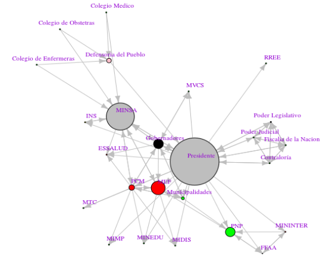
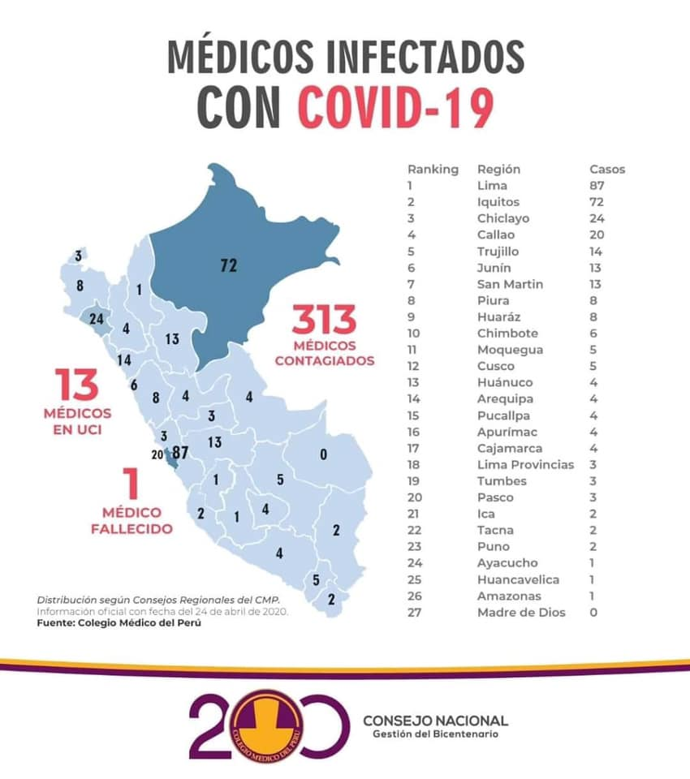

Seguimiento nacional
Introducción
El objetivo del seguimiento nacional es registrar la cadena de decisiones políticas adoptadas por el gobierno nacional en el contexto de la Emergencia Nacional a causa del COVID-19.
Este seguimiento cuenta con 7 secciones: Trayectoria de las decisiones, instrumentos de politicas, redes de politicas, establecimiento de los problemas publicos, servidores de primera linea, eventos de protestas, pronunciamientos y demandas.2.1. Trayectoria de las decisiones públicas
Para visualizar la actualización de las medidas frente al COVID-19: Monitoreo de la toma de decisiones

2.2. Análisis por instrumentos de política pública
Los instrumentos basados en la nodalidad, son aquellos formas de información donde el Estado exhorta determinadas conductas en la comunidad; Ejemplo: “Reporte diario de casos”
los instrumentos basados en la autoridad está compuesto por las regulaciones directas como parte del control directo del comportamientos bajo normas establecidas y sus respectivas sanciones; Ejemplo: “Inmovilización Social Obligatoria”
aquellos instrumentos basados en el tesoro tienen como principal acción generar ingresos o pérdidas que incentiven las conductas esperadas; Ejemplo: “Subsidio del 35% de sueldos en planillas”
- finalmente los instrumentos basados en la organización, los cuales poseen una manifestación organizacional de la cual se construye un tipo de apoyo o sustento para afrontar el problema público. Ejemplo: “Línea 113”
Entonces, ¿Cuáles han sido los instrumentos de política puestos en práctica por el gobierno para enfrentar la crisis del COVID-19?
2.3. Redes de subsistemas politicos
Para ver la leyenda de los tipos de actores por colores de los nodos aquí . El tamaño de los nodos es construida por el número de conexiones con la finalidad de representar sus vínculos en la red.
{kind=link}

2.4. Agendación de los problemas públicos
El giro argumentativo en las políticas públicas ha significado la inserción del enfoque constructivista, cuya premisa fundamental es la de ponderar a la argumentación como esencial en todas las etapas de formulación de las políticas. Así pues, registrando los discursos de los actores durante el proceso de emergencia del COVID-19 se ha venido construyendo una imagen de la política (policy image) que encuadran el problema mediante información empírica y sus interpretaciones para las soluciones por adoptar desde el gobierno (Baumgartner & Jones, 1993)
Asimismo, debemos tener en cuenta la teoría de las corrientes múltiples, propuesta por Kingdom (1984), que se basa en la identificación de los problemas, las políticas públicas y la política. La conjugación de estas, impulsada por actores clave, abrió una ventana de oportunidad para que surjan una serie de decisiones para afrontar la emergencia sanitaria que representa el COVID-19.2.5. Situación de los servidores en primera línea
Personal médico

Policias
Max Iglesias (Comandante General de la PNP): “Alrededor de mas de dos mil policías contagiados y 24 policias que lamentablemente han fallecido.” (29 de abril del 2020)
2.7. Noticias, demandas y pronunciamientos
Este apartado fue construido a partir de la información publicada en plataformas web y que fueron recopiladas en el siguiente grupo de facebook: COVID-19 PERÚ creado por Carlos Andres Guevara.
28/04
SALUD | Mayoría de casos de coronavirus en Puno son policías y personal de Salud. De los 66 casos confirmados de coronavirus en Puno, la mayoría son miembros de la Policía, el INPE y trabajadores de salud Aquí
EDUCACIÓN | Alrededor de 4 mil docentes que laboraban en colegios privados de la región Arequipa se han quedado desempleados, según Rustbel Begazo Salazar, presidente de la Asociación de Instituciones Educativas Privadas de la región Arequipa (Asiepra) Aquí
27/04
JUSTICIA |Los presos de los penales de Ancón 2 en Piedras Gordas, Castro Castro en San Juan de Luringancho, Huamancaca Chico en Junín se han amotinado en protesta por la falta de atención de las autoridades penitenciarias a los reclusos contagiadosiro dos cuerpos de los fallecidos por COVID-19, reportaron los familiares de los reclusos. Aquí
SALUD | El Agustino: Técnicos y enfermeros del hospital Hipólito Unanue exigen pagos de marzo y abril. Aquí
SALUD |El personal de salud del área de Emergencia del hospital de EsSalud protestó por falta de equipos de protección. Autoridades señalan que les otorgan todos los implementos para atención de pacientes. Unos 18 trabajadores dieron positivo al COVID-19. Aquí
SALUD | Personal del Hospital Almanzor realiza plantón por falta de equipos de protección. Aquí
26/04
POBLACION INDÍGENA | La Federación de comunidades nativas de Purus - FECONAPU informó en sus redes sociales el fallecimiento del primer indígena amazónico por Covid-19, hoy 26 de abril, en Pucallpa, Ucayali. Aquí
25/04
SALUD | Pronunciamiento del Cuerpo Médico del Hospital de Emergencias Grau. Aquí